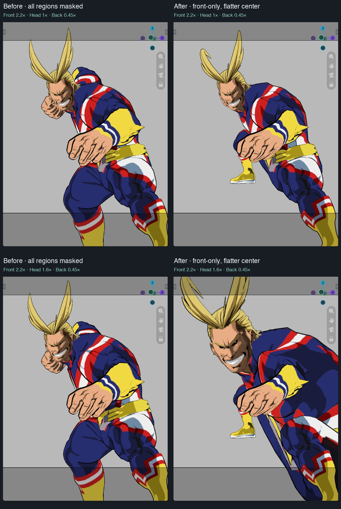

Superseded after user rejection: the front scale still varied too much across the hand. See uniform front area repair. Historical captures remain unchanged.
The camera-axis mask now applies only to the front region. The subject/head depth region and back region scale uniformly, regardless of their distance from the axis. Front and back transition widths still blend across the head bounds.
Front influence has a flatter center and sharper distant fade. Its exponent adapts at large enlargement to preserve positive radial order. This keeps nearby hand/arm vertices more consistent and limits changes to an off-axis front leg. It does not detect body parts or promise rigid scaling across an entire hand.

All images are actual Metal captures at the same camera and pose. Front2.2× and linked Back0.45× are fixed. The bottom row raises Subject size to1.6×. The far leg now responds more strongly to Back size because that region is intentionally no longer axis-masked. The front off-axis leg remains masked. These are depth regions; other geometry sharing the head depth can also scale with Subject size.
21 geometry/UI fixtures pass on Blender4.2.23,4.3.2,4.4.3,4.5.15,5.0.1,5.1.2 and5.2.2 on macOS. Head/back axis-versus-uniform positional error is zero in the fixture. At1.7×, nearby-region scale spread falls from0.170 to0.080; distant influence at three radii falls from10% to1.22%. A32,001-point axis update remains about1.1ms on5.2.2, not whole-scene FPS. No anatomy classification, neighborhood scan, subdivision, extra reduction or Python vertex loop.
Installed and live schema31 match source. Original scene values were restored after capture; no blend file was saved. Physical Windows replay and arbitrary coarse-triangle collision freedom remain unqualified.